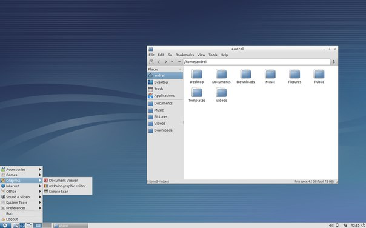
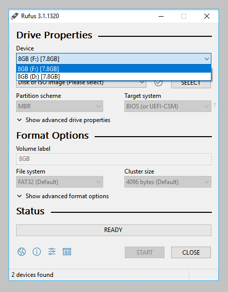
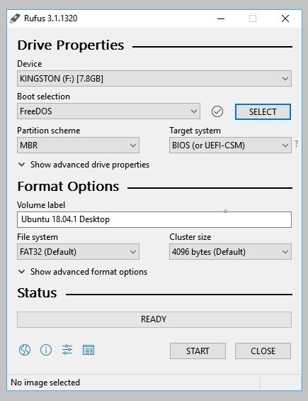
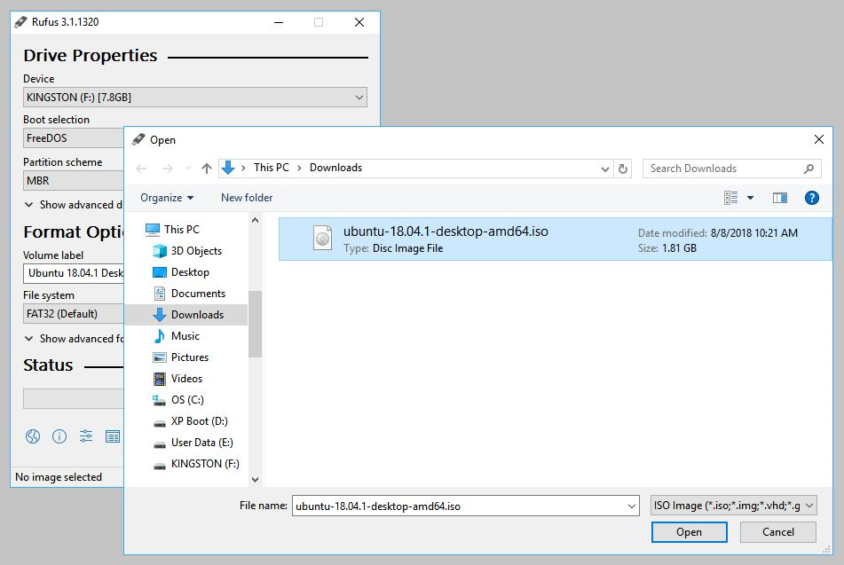
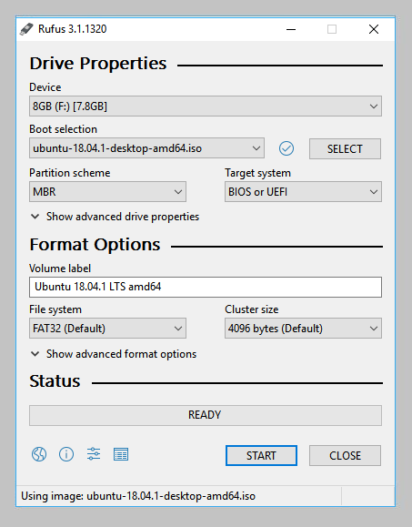
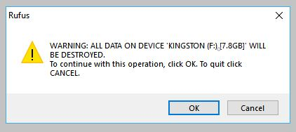
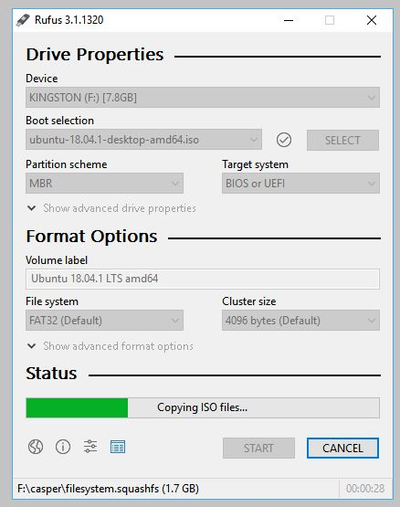
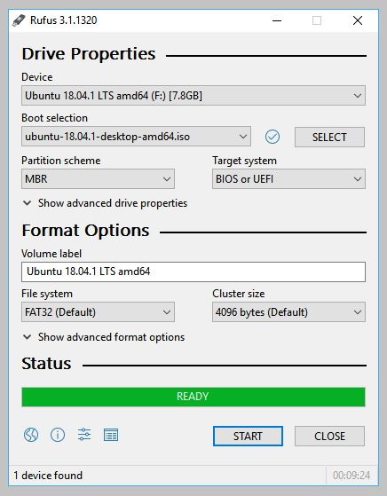

Создание Lubuntu Linux Live USB в Windows
LiveUSB(LiveСD) - это операционная система записанная на CD/DVD диск или на USB флешку. Такая ОС умеет очень быстро запускаться и развертываться без установки на жесткий диск. Загрузившись с LiveUSB вы получите ЧИСТУЮ, безопасную операционную систему для работы с криптовалютными кошельками. Настоятельно рекомендуем при манипуляциях с закрытыми ключами Ваших кошельков использовать такую ОС.
Изменения в ПО ОС между запусками LiveUSB(LiveСD) не сохраняются, т.е. Вы каждый раз загружаетесь в чистую ОС, без вирусов, троянов, бэкдоров и прочих инструментов злоумышленников.
Для создания LiveUSB мы выбрали ОС Lubuntu, вариант Ubuntu, развивающий более лёгкое, менее ресурсоёмкое, а также энергоэффективное окружение, регулярно обновляется и не требовательна к ресурсам ПК.
С помощью загрузочного Lubuntu Linux Live USB(CD) вы сможете:
- Установить или обновить Lubuntu,
- Проверить работоспособность рабочего стола Lubuntu, не касаясь конфигурации вашего ПК,
- Загрузится в Lubuntu на своем компьютере или с любого другого ПК в интернет кафе для безопасной работы,
- Восстановить или исправить конфигурацию ОС используя инструменты, установленные по умолчанию на Lubuntu Linux Live USB(CD).
.
Для создания загрузочного Lubuntu Linux Live USB в ОС Windows нам понадобиться:
- чистый USB емкостью 4Gb,
- образ операционной системы - (файл с расширением iso), который нужно скачать отсюда. Я для себя выбрал дистрибутив - lubuntu-18.04.1-desktop-i386.iso,
- Microsoft Windows XP или более поздняя версия,
- Rufus, бесплатный инструмент с открытым исходным кодом для записи USB-накопителей.
После того как вы загрузили ISO-файл для создания Lubuntu Live USB(CD/DVD) , рекомендуется проверить, что файл является правильным и безопасным для использования.
Для настройки USB-устройства в Rufus выполните следующие действия:
- Запустите Rufus,
- Вставьте USB-накопитель,
- Rufus обновит,список устройств в поле «Устройства», если у вас несколько USB-устройств хранения данных, выберите верное устройство.
.
Теперь в поле Boot selection выберите FreeDOS. Поля Partition scheme (MBR) и Target system (BIOS (or UEFI-CSM)) оставьте по умолчанию.
.
Выберите файл ISO Lubuntu
Чтобы выбрать загруженный ранее файл ISO Lubuntu, нажмите SELECT справа от «Boot selection». Выберите соответствующий ISO-файл и нажмите «Открыть».
.
Поле Volume label будет обновлено и отразит выбранный ISO.
Оставьте все остальные параметры с их значениями по умолчанию и нажмите «START », чтобы начать процесс записи.
.
Если появится предупреждение о том, что Rufus требует дополнительных файлов для завершения написания ISO, выберите «Да» для продолжения.
 .
.
Вы будете предупреждены о том, что Rufus обнаружил, что Lubuntu ISO является образом ISOHybrid. Это означает, что один и тот же файл ISO может использоваться как источник для DVD, так и для USB-накопителя без необходимости преобразования. Оставьте Write in ISO Image mode и нажмите OK, для продолжения.
 .
.
Rufus также предупредит вас, что все данные на выбранном USB-устройстве будут уничтожены. Это хороший момент, чтобы дважды проверить, что вы выбрали правильное устройство, прежде чем нажимать «ОК».
.
ISO образ теперь будет записан на ваш USB-накопитель, а индикатор выполнения в Rufus даст вам некоторое представление о том, как проходит процесс. При использовании достаточно современной машины это займет около 10 минут. Общее прошедшее время отображается в нижнем правом углу окна Rufus.
.
Когда Rufus закончит писать USB-устройство, строка состояния будет заполнена зеленым цветом, и слово READY появится в центре. Выберите CLOSE, чтобы завершить процесс записи.
.
Поздравляем! Теперь у вас есть готовый к работе Lubuntu Linux Live USB, загрузочный USB диск с быстрой и безопасной ОС.
После записи нашей безопасной ОС рекомендуется проверить ее на отсутствие ошибок записи, это можно сделать при запуске Lubuntu Linux Live USB(CD).
Защитите вашу конфиденциальность при использовании криптовалют.
Защитите Ваши интернет платежи с помощью Linux Live CD(USB).
Создание Lubuntu Linux Live CD в Windows.
Создание Lubuntu Linux Live USB в Windows.
Проверка целостности дистрибутива Lubuntu Linux Live USB(CD/DVD) в Windows.
Проверка целостности дистрибутива Lubuntu Linux Live USB(CD/DVD) после записи на USB(CD/DVD).
|
|

Home Nagrania Projects |


|